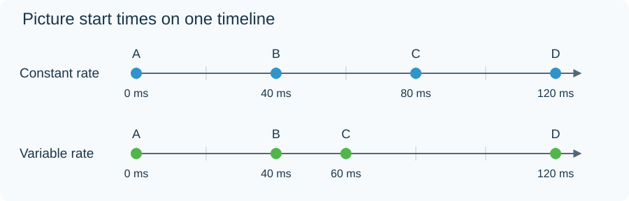

Variable Frame Rate
Variable frame rate allows the interval between successive video pictures to change.
The four pictures below begin at 0, 40, 60, and 120 ms. Let the last picture remain visible until 160 ms.
| Picture | Starts at | Ends at | Duration |
|---|---|---|---|
| A | 0 ms | 40 ms | 40 ms |
| B | 40 ms | 60 ms | 20 ms |
| C | 60 ms | 120 ms | 60 ms |
| D | 120 ms | 160 ms | 40 ms |
Their intervals vary. This is variable frame rate (VFR): the timeline carries the presentation schedule rather than describing every picture with one common duration.

The variable picture starts match the table. The added 160 ms endpoint defines the complete example's final hold.
What the player does
The player shows A until 40 ms, B for the next 20 ms, then C for 60 ms. Audio continues along the same timeline. A new video picture need not arrive on every screen refresh; the current picture can remain visible until the next timestamp.
A screen recording can exploit this to retain a picture longer while the screen is static. A camera or edited sequence can produce VFR for other reasons. The timestamp schedule, rather than an assumed capture strategy, defines the representation.
The average hides the intervals
There are four pictures across 0.160 second:
4 ÷ 0.160 = 25 pictures/s on average.
Four equal 40 ms pictures over the same interval also average 25 fps. One sequence is variable and one is constant, even though their count, duration, and average match.
A stream inspector can consequently show a reasonable average while picture-level timestamps reveal uneven intervals. This is useful for an Emby home video whose timing changes during conversion: compare the actual starts and durations, rather than only the rate field in a summary.
Convert to a constant schedule
A 25 fps output needs starts at 0, 40, 80, and 120 ms. One illustrative policy chooses the source picture currently visible at each output instant:
| Output instant | Source picture selected |
|---|---|
| 0 ms | A |
| 40 ms | B |
| 80 ms | C |
| 120 ms | D |
The output still lasts 160 ms, but the transition to C now occurs at 80 ms instead of 60 ms. In a longer sequence, some source pictures may be repeated or omitted. A converter can use a different selection policy or interpolation, so its exact visible changes depend on that policy.
The important point is that output pictures are chosen against the existing timeline. Duration and audio timing can remain intact even though the picture allocation changes.
Retiming every picture is another operation
If those same four pictures are instead each assigned 1/30 second, the sequence lasts 133.33 ms. The old presentation schedule has been replaced. Audio and subtitles following the original 160 ms timeline will no longer match without related retiming.
Even assigning 40 ms to every picture, which preserves this example's total duration, moves its internal transitions. VFR carries those internal intervals as information. Preserving or changing them is a deliberate part of making a new video representation.